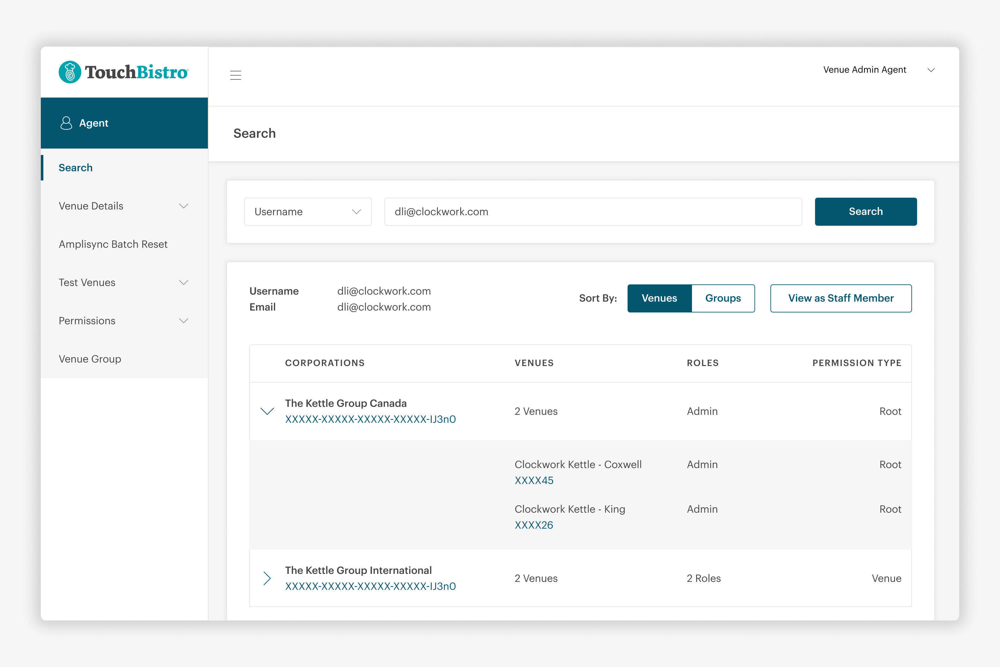
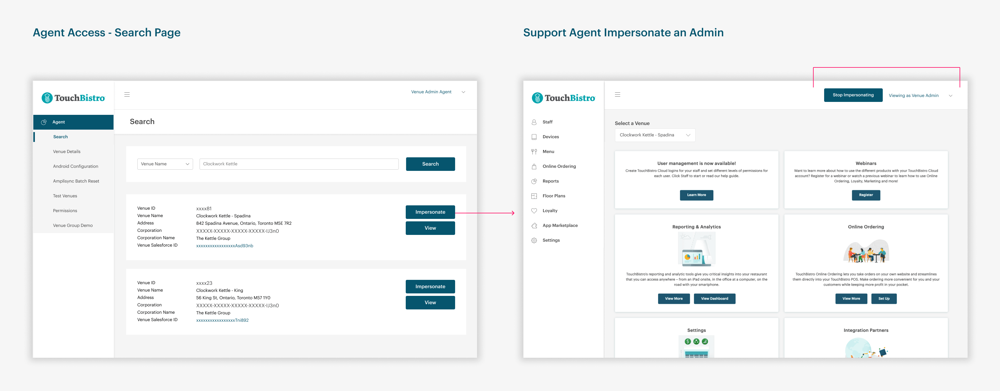
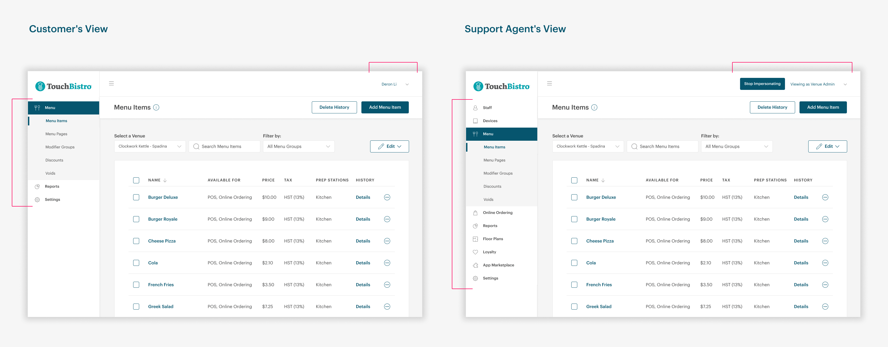
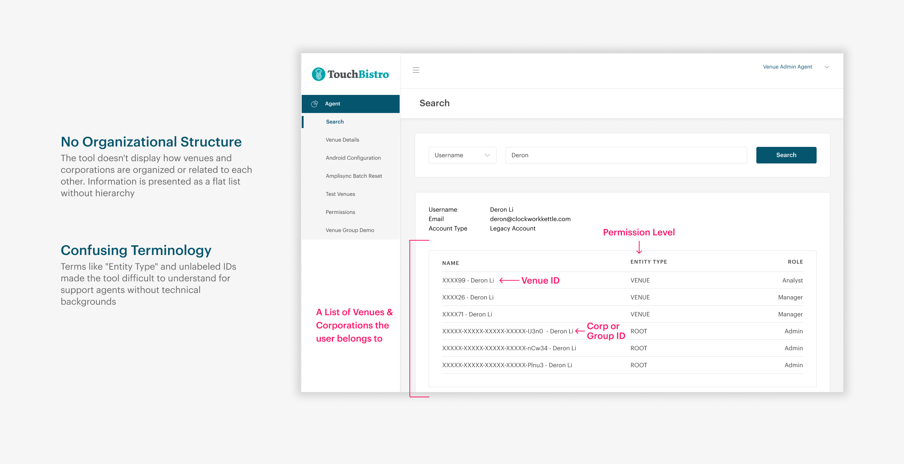
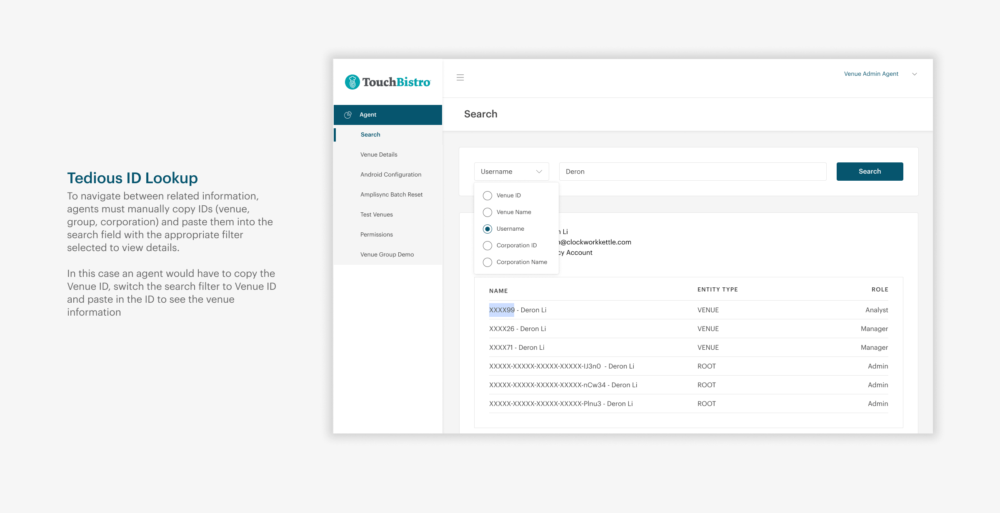
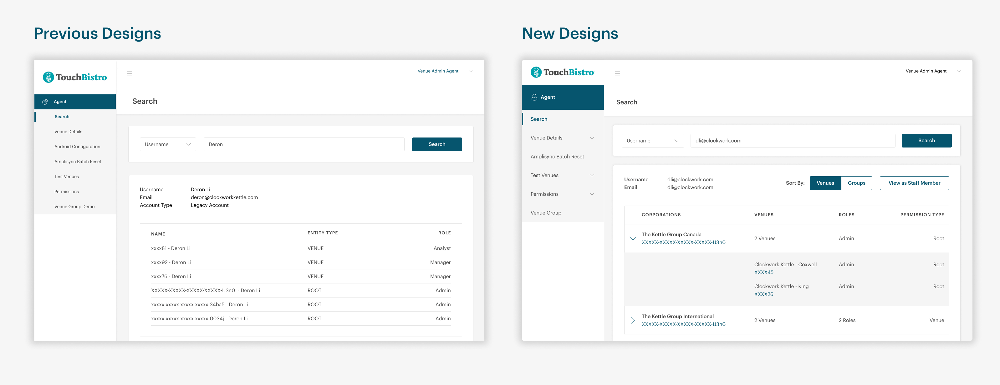

Reducing Customer Call Times by 33%
I redesigned an internal support tool to solve a critical troubleshooting gap where agents couldn't reproduce customer issues. After conducting interview with support agents to identify pain points, I designed user-level impersonation capabilities and reorganized the information architecture to improve navigation and clarity. This reduced average support call times by 33%, from 18 to 12 minutes per case.

Context
Supporting Customers Using an Internal Tool
TouchBistro's Cloud platform is where restaurant owners manage operations like menus, staff, reports, and settings. Owners assign different permission levels to team members based on their roles (e.g., managers get full access, accountants only see reporting).
Agent Access is an internal tool that helps support agents configure customer accounts. Agents can view details, enable features, and troubleshoot issues. A key feature allows agents to view the account as an admin to make changes when customers call for help.

Problem
Agents and Customers Weren't Seeing the Same Thing
When customers with limited permissions called for help, agents could only view their accounts as admins with full access. This created a disconnect where customers experienced issues that agents couldn't see or reproduce. The result was significant time wasted on calls just trying to understand the customer's perspective before troubleshooting could begin.
This presented an opportunity to reduce inflated call times and improve troubleshooting accuracy by closing the visibility gap between agents and customers.
Research
Understanding Agent Workflows and Pain Points
I conducted interviews with support agents to understand their challenges. Agents explained that admin-level impersonation worked well for single-location customers with one role, but grew complicated with customers belonging to multiple venues.
Multi-Role Complexity
Customers with different roles across venues made impersonation challenging.
Unable to Reproduce Errors
Agents relied on questions and logs to diagnose issues they couldn't see themselves.
No Corporate Hierarchy
Venues appeared as a flat list with no visibility into which corporation they belonged to.
Tedious ID Navigation
Moving between records required copying and pasting IDs into the search filter manually.
Confusing Terminology
Labels like "Entity Type" weren't meaningful to non-technical agents.

Customer's vs. Agent's View
Customers only see what their role allows. Agents impersonating an admin always see everything. That gap made it impossible to reproduce permission-based issues without knowing exactly which role the customer was in.


Solution
User-Level Impersonation to Match Customer Perspectives
After gathering feedback from agents and discussions with the team, I designed an experience to enable user-level impersonation. This solution allows agents to select specific staff member accounts and view their experience based on permission level and venue access, enabling agents to accurately reproduce what customers are seeing and troubleshoot issues quicker.

User-Level Impersonation
Agents can now share a 1:1 experience with the customer.
Impersonate Using the Staff Member List
I added a new page under venue details displaying all staff members within that venue and their assigned roles/permissions. This allows agents to select the appropriate account to impersonate.
Impersonate Via Username
To address the multi-venue, multi-role challenge, agents can search by username to impersonate users who have multiple roles across different venues or corporations.
Improving the Information Architecture
To address the lack of organizational structure, I organized venues under their parent corporations. This hierarchy allows agents to quickly identify which venues belong to which corporations and understand their relationships. I also replaced technical terminology with more accessible language.

Reduced Navigation Steps
Instead of requiring agents to copy and paste IDs and manually switch search filters, IDs are now clickable hyperlinks that navigate directly to those sections. This directly reduces time spent jumping between related information.
Validation
Positive Feedback From Stakeholders
We shared the redesign with support agents and developers who use the tool daily. Feedback was overwhelmingly positive. Agents immediately saw how user-level impersonation would improve their workflow. Developers appreciated the clearer hierarchy structure showing venue organization and more intuitive information architecture. QA teams were excited about how the improvements would help them identify problems with specific user accounts during testing.
[Quote]
Impact
Reducing Support Calls From 18 mins to 12 mins
After launching the redesign, support calls from customers experiencing issues on Cloud dropped from 18 minutes to 12 minutes, on average, within the first month of the release. Agents could now see exactly what each user experienced, allowing for faster diagnosis and tailored solutions.
Reflection
Internal Tools Need the Same Design Care
This project demonstrated that internal tools deserve the same design rigor as customer-facing products. Support agents rely on Agent Access dozens of times daily. Improving their experience compounds into significant efficiency gains and better customer outcomes.
The cross-functional impact was particularly rewarding. What began as a support efficiency problem became a win for developers needing better debugging tools and QA teams requiring user-level testing capabilities.